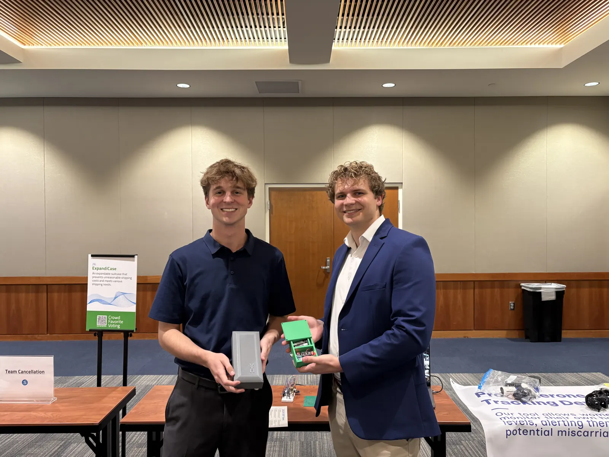
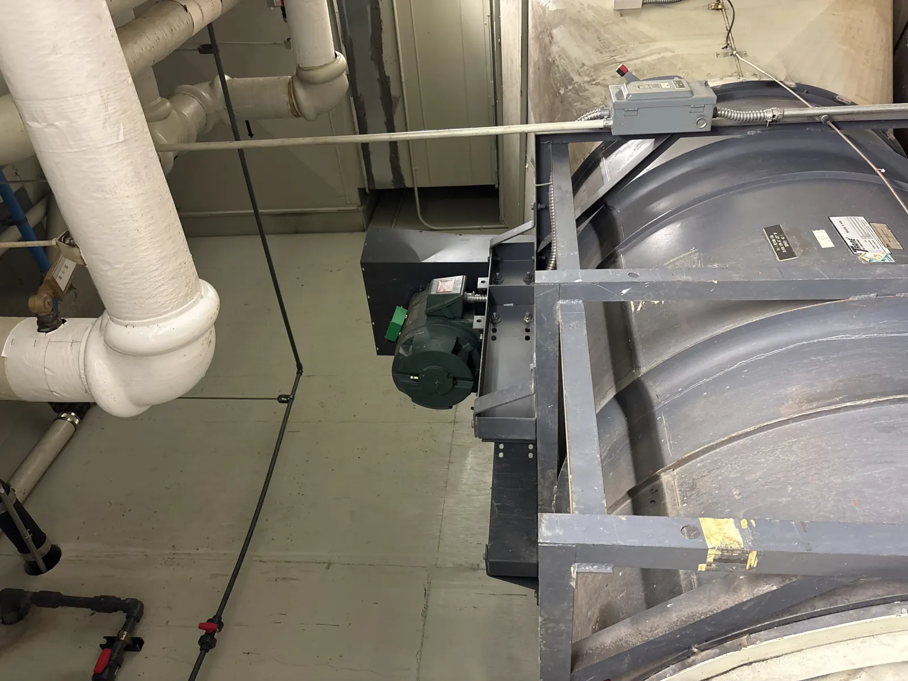
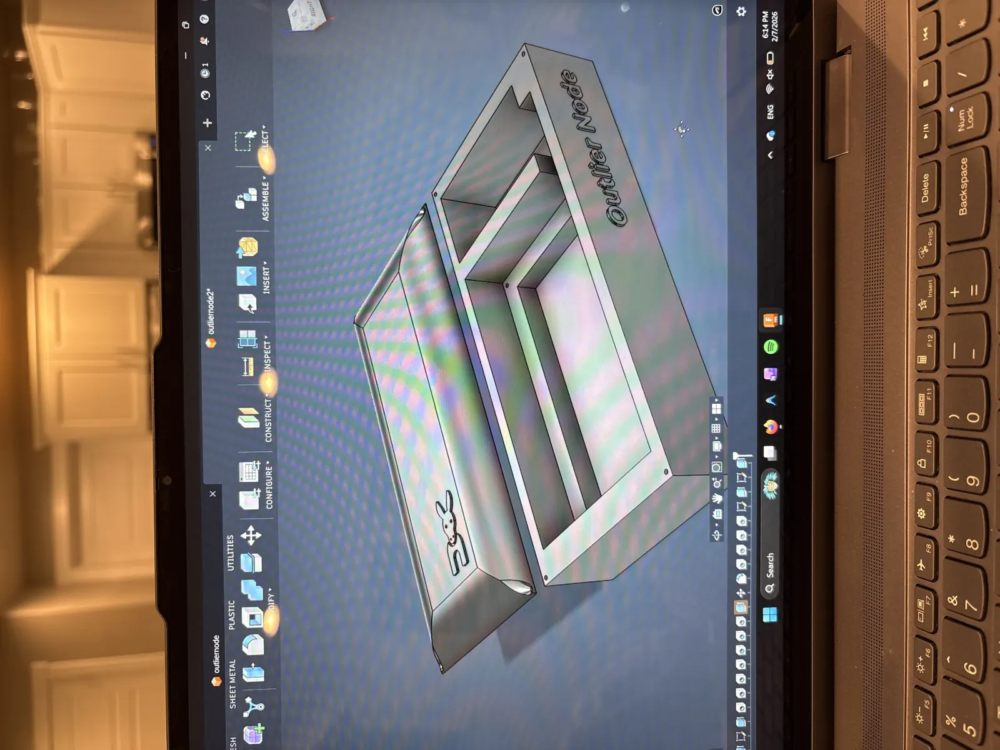
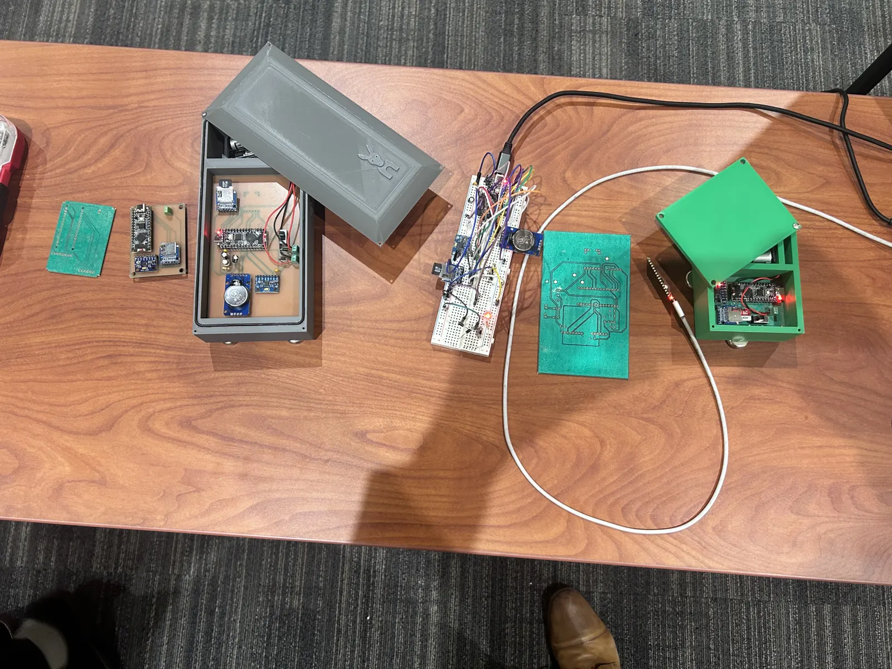
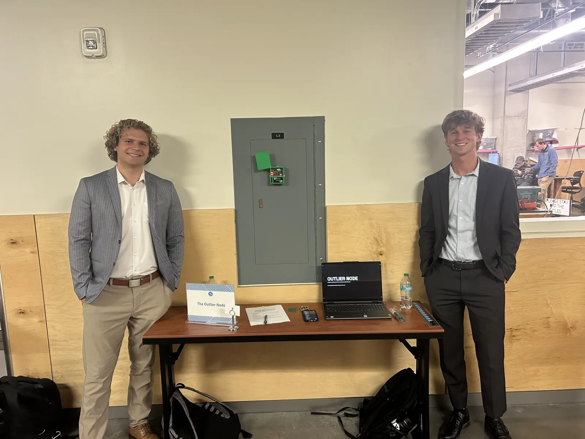

Machine Learning · Hardware Prototype · BYU SIOY
Outlier Node
A predictive maintenance sensor for industrial motors, built for BYU's Student Innovator of the Year competition. I led the machine-learning pipeline and helped connect vibration-data modeling to a physical prototype.

Problem
Industrial motors often fail after subtle vibration changes begin to appear. The project goal was to explore whether a low-cost sensor could identify early warning signs and give operators a practical maintenance signal before failure.
For the competition, we needed more than a model score. We needed a believable hardware concept, a working prototype, a dataset-backed prediction approach, and a clear business case that could be explained to judges and mentors.
My Role
I led the ML engineering work and helped drive the technical direction. That included cleaning large vibration datasets, engineering features from raw signals, selecting and training a classifier, and translating the model into something that could plausibly run as part of a sensor workflow.
I also learned Tinkercad and Fusion 360 during the project so the team could iterate on physical enclosures and present a complete prototype instead of a software-only concept.
Technical Approach
Signal Features
Extracted RMS, kurtosis, and crest factor features from raw vibration windows to represent motor-health patterns.
Fast Data Work
Used Polars to process millions of vibration records efficiently during feature engineering and model preparation.
Model Selection
Trained a Random Forest Classifier that performed well on overall classification while surfacing anomaly-recall tradeoffs.
The final model reached 99.6% overall accuracy and 79% anomaly recall on the dataset we used. I treated the recall number as the more important operational metric because missed failures are more expensive than false positives in predictive maintenance.
Prototype
We built and displayed multiple prototype iterations, including a first version attached to an HVAC fan motor and a later enclosure modeled in Fusion 360. The physical prototype helped judges understand how the model could become a deployable maintenance product.




What I Learned
The strongest technical lesson was that model accuracy is only one part of a usable system. For predictive maintenance, recall, sensor placement, deployment environment, and operator trust all matter.
The project also pushed me outside pure software: I had to learn CAD tools, prototype under competition pressure, present to judges, and explain the tradeoffs between business value and technical feasibility.